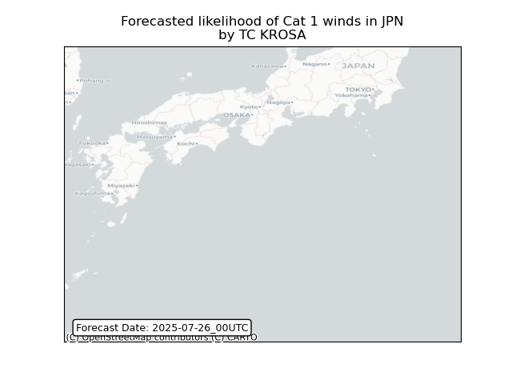
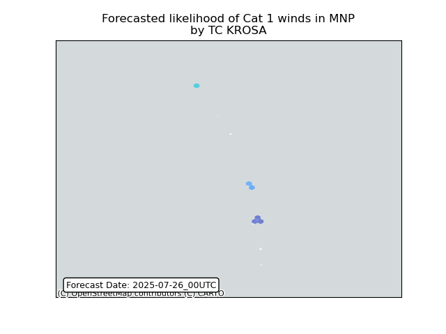
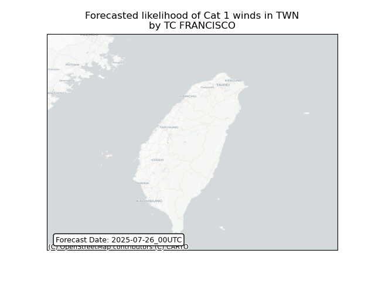

This is a WIP. All this is going to change, for now we’re just dumping things here. ## Forecast for 2025-07-26 00:00 UTC
There are 2 active named storms.
 ## KROSA Japan: people exposed


 ## KROSA Russian Federation: areas affected
 ## KROSA Russian
Federation: people exposed
## KROSA Russian
Federation: people exposed


 ## FRANCISCO
China: people exposed
## FRANCISCO
China: people exposed


 ## FRANCISCO Taiwan, Province of China: people exposed